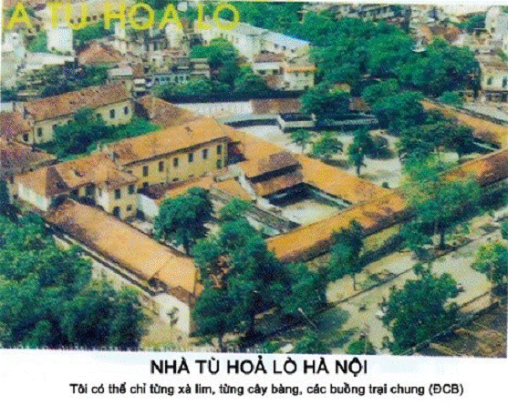
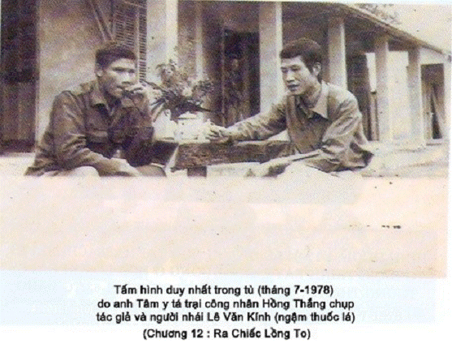
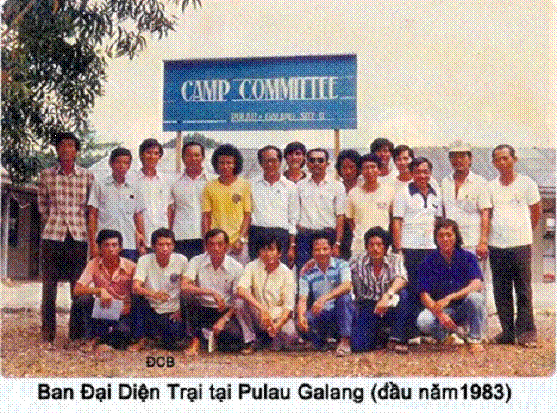
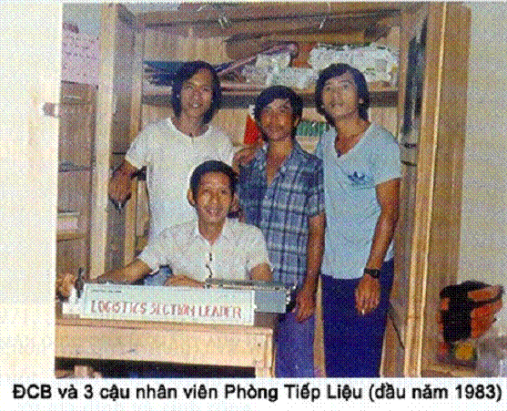
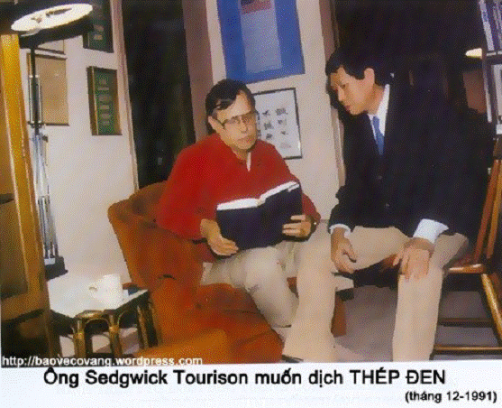
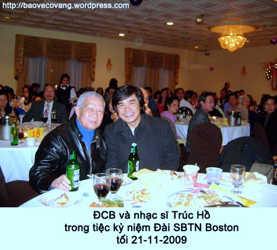

Một đêm 6/1972, tại K3 trại Trung Ương số 1 phố Lu, Lào Cai, bốn người này ngồi ủ rũ, tâm tư mỗi người trăn trở vơi đầy của những kiếp tù khác nhau. Nhưng có một cái chung là đều nghĩ chẳng bao giờ được về sống ngoài xă hội như mọi người. Lầu Chí Chăn (người nhái) đă phát biểu:
-Uớc gì khi chúng mình chết, được chết no!
Hình này chụp ngày 6/3/2005. Sau 33 năm, với bao nhiêu đổi thay, chìm nổi của quê hương, cuộc đời và thế giới, 4 người này lại ngồi với nhau tại Westminster, CA.
Xin vài phút lắng đọng, suy tư để thấy cái kỳ diệu của kiếp người (ngay ở xứ Hoa Kỳ, mỗi người ở mỗi nơi. TG ở mãi bên bờ Đại Tây Dương)
Tác giả ngồi đối diện với Nông Văn Hinh, Lầu Chí Chăn ngồi sau TG, đối diện với Lưu Nghĩa Hưng. Nhắc chuyện xưa, Chăn lại phát biểu:
-Bây giờ, chúng ta lại sợ chết no!





